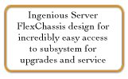
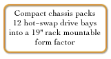
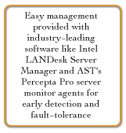
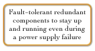
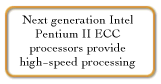

Fault-tolerant Technology Allows Troubleshooting on the Fly
We have incorporated a number of fault-tolerant innovations into the Premium HS. Virtually every
component on our server is redundant. This includes power supplies, Ethernet controllers, RAID subsystems, hard
drives and fans. The inclusion of hot-swappable power supplies ensures the system continues to run, even
in the event of a power supply failure. With the help of failure indication LEDs and manual power override, you
can rest easy knowing that your mission-critical programs are protected. The Premium HS can support two intelligent
EtherExpressTM server adapters which also provides fault-tolerance of your crucial data by keeping the
network connections open even during Ethernet failure. This feature makes networking faster and more reliable
than in standard configurations. Finally, this remarkable server also features built-in RAID standard and
AST's patented Impedance Control Technology which reduces data throughput interference and allows the SCSI backplane
to run at the highest possible speeds ensuring continual data integrity.

Premium HS Resources:
Product information PDF format:
Buying AST
- Business customers can request information on our line of Bravo business desktop computers, Ascentia notebooks, or Manhattan servers, simply by filling out this on-line form
- Reseller partners can view sales information on AST Interchange, the premier reseller information site on the Internet. Through AST Interchange, resellers can view product catalogs, marketing programs, and the most current news and information available.




